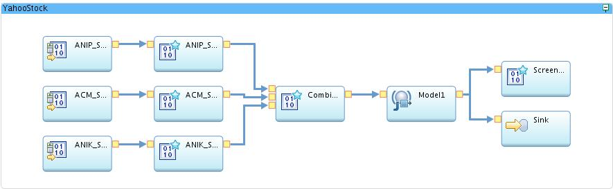
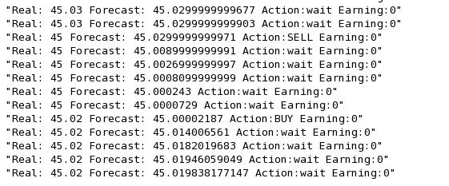
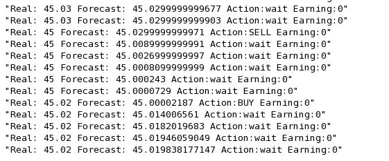

Why you did it?

This was one of the project in Real-time data analysis class taught by Eric Tangedahl and Joel Henry. I enrolled in the class as a graduate student from Computer Science department, this is an independent study offered by CS professor Jeol Henry. In this project, I need to take the feeds of stock price from Yahoo, and write models to do the time series analysis, and make decision of buy/sell decisions by comparing the value returned by the model and the real value from Yahoo stock.
What it does?
First, it will grab stock price data from yahoo stock, and get rid of the information we are not intersted. There are two models in the project called moving average and exponential smoothing which do the time series analysis job and return a forecasting value. The forecasting value will be compared with the real value and the program gives an advise about whether to sell stock or buy stock according to the result of comparison. There are two option for the output in the program: to sink to a file or to print to the console.
How you built it?
I used ACM_Source to grab data from yahoo finance api, and the stream data goes to a ACM_Splitter operator which retrieves those fields we are interested in. Then I have a user defined operator which is implemented in Java.
In the user defined operator, I implemented two time series analysis models, the moving average and exponential smoothing. For the moving average, I just calculate the sum of all numbers in the cache and return the average as forecasting value from the model.
For exponential smoothing, I defined a coefficient and use the formula of exponential smoothing to get the forecasting value.
For making the decision of buy and sell, I compare the forecasting value with the actual value. A buy decision will be suggested when the forecasting value goes lower than the actual value, other wise a sell decision will be made. I also set a difference threshold when the difference of the two price value cannot pass the threshold, the program sends a wait decision instead.
For the output, I use a FileSink operator which sinks all the output to a file. I also use a ScreenOut operator to output the decisions to the console.
What did you learn?
In this project, I learned how to use IBM InfoSphere Streams to do the stream data analysis. I learned what is time series analysis, how moving average and exponential smoothing work and how to implement them. I learn how to develop user defined operators in InfoSphere Streams.